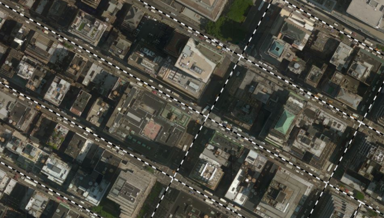

在Cesium中访问WMS服务
Cesium提供了多种地图服务支持，当前GeoServer支持WMS 1.1.1。我是用的Cesium 1.35 也支持WMS 1.1.1。
访问不使用缓存数据的WMS
Geoserver的WMS服务路径格式为http://<ip>:<port>/geoserver/<work-space>/wms。
其中<ip>和<port>表示服务器的IP和端口号，<work-space>表示工作区的名称。
在这里我使用的本地服务，并且端口号为8085，所以服务路径为http://localhost:8085/geoserver/nyc_roads/wms。
在Cesium加载WMS图层的代码如下
var provider = new Cesium.WebMapServiceImageryProvider({
url: 'http://localhost:8085/geoserver/nyc_roads/wms',
layers: 'nyc_roads:nyc_roads',
parameters: {
format: 'image/png',
transparent: true,
}
});
viewer.imageryLayers.addImageryProvider(provider);
在Cesium中的结果

访问使用瓦片缓存数据的WMS
使用瓦片缓冲（GeoWebCache）访问WMS，只需在普通路径/wms前添加/gwc/service。
所以路径就变为http://localhost:8085/geoserver/nyc_roads/gwc/service/wms。
同时可以限制最大级别为21，因为我们只切了0-20级，总共21个级别。
修改代码为
var provider = new Cesium.WebMapServiceImageryProvider({
url: 'http://localhost:8085/geoserver/nyc_roads/gwc/service/wms',
layers: 'nyc_roads:nyc_roads',
maximumLevel: 21,
parameters: {
format: 'image/png',
transparent: true,
tiled: true
}
});
viewer.imageryLayers.addImageryProvider(provider);
由于在最大级别时已经是很大的比例尺，所以两者显示区别并不大。但使用瓦片缓存数据可以有效减少服务器的压力。